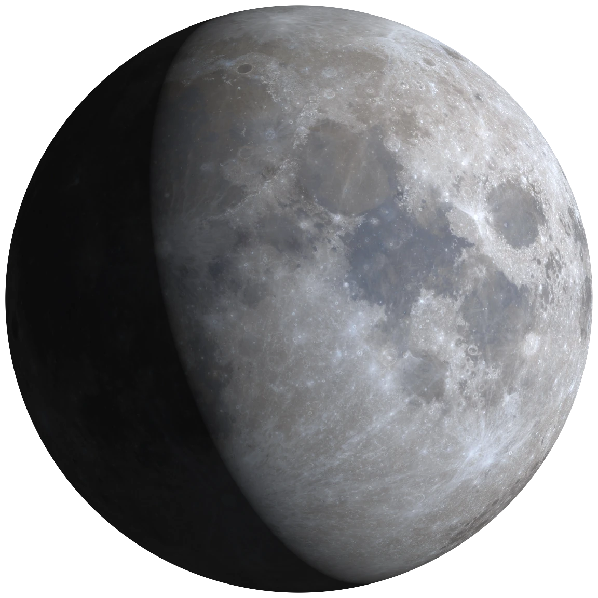

NASA Space Apps Challenge · CLPS
The Moon,
understood.
Explore the lunar surface, follow the missions that travelled there, and discover what they carried.
Terrain & illumination
Lunar Explorer
Choose a site. Change the simulation time. See how the surrounding lunar terrain changes what that site can see.
A crater rim can block low-angle sunlight. Serenity checks whether the Sun’s centre, part of its disk, or the entire disk clears the local skyline.
Flight histories
Mission Explorer
Follow the missions that reached for the Moon, from early probes to commercial landers. See where they went and what they set out to do.
The journey begins near Earth. The next step depends on the spacecraft’s destination and mission profile.
Instruments & experiments
Payload Explorer
Meet the instruments and technology a mission brings to the Moon, and discover what each was designed to measure or demonstrate.
A camera can study terrain, recognise features, and document what happens around a lander.